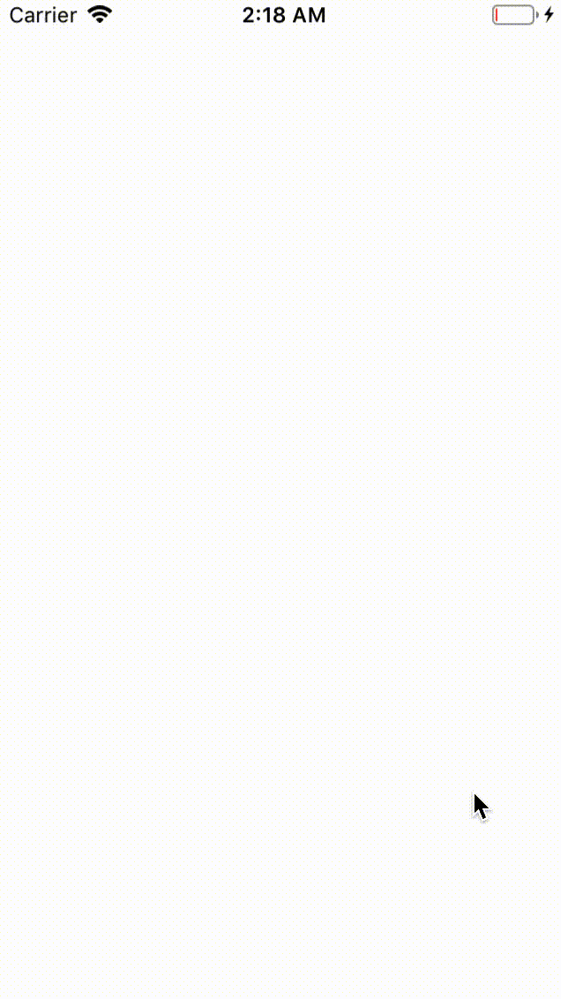
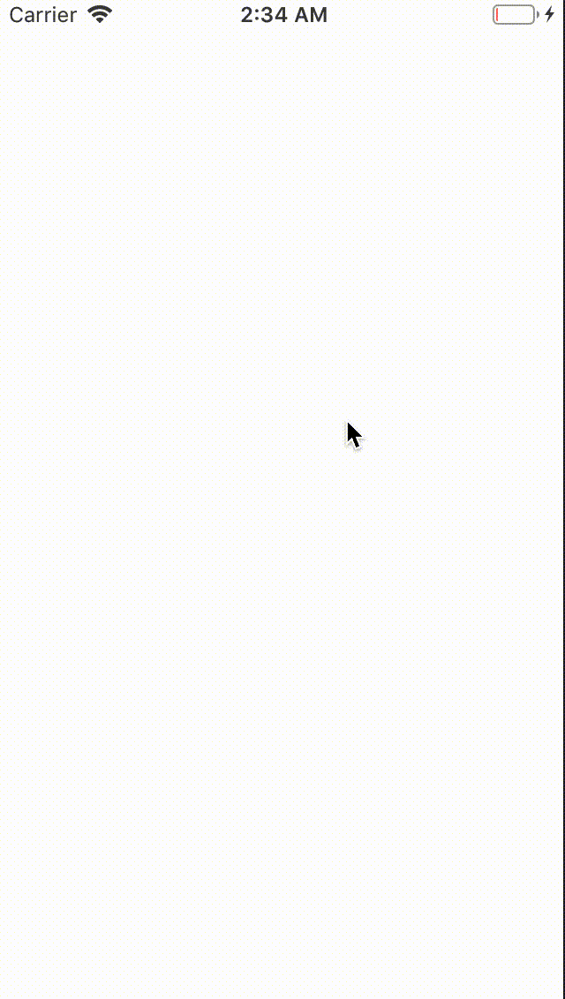
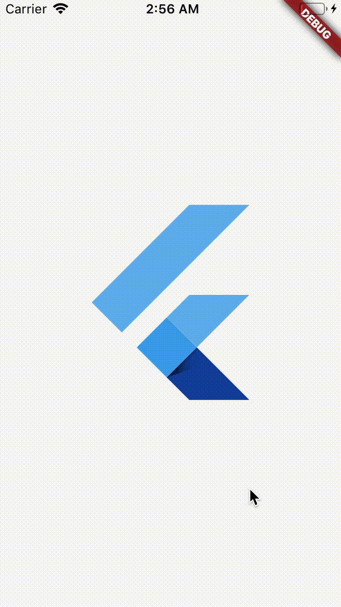
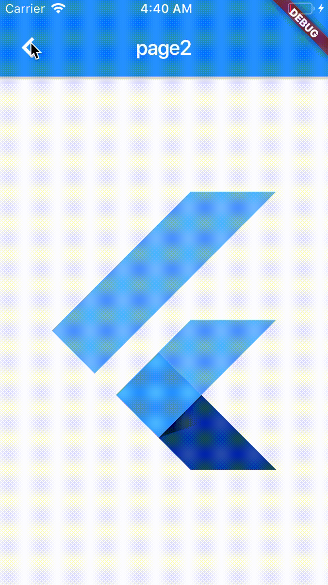

你好，我是陈航。
在上一篇文章中，我带你一起学习了 Flutter 中实现页面路由的两种方式：基本路由与命名路由，即手动创建页面进行切换，和通过前置路由注册后提供标识符进行跳转。除此之外，Flutter 还在这两种路由方式的基础上，支持页面打开和页面关闭传递参数，可以更精确地控制路由切换。
通过前面第12、13、14和15篇文章的学习，我们已经掌握了开发一款样式精美的小型 App 的基本技能。但当下，用户对于终端页面的要求已经不再满足于只能实现产品功能，除了样式美观之外，还希望交互良好、有趣、自然。
动画就是提升用户体验的一个重要方式，一个恰当的组件动画或者页面切换动画，不仅能够缓解用户因为等待而带来的情绪问题，还会增加好感。Flutter 既然完全接管了渲染层，除了静态的页面布局之外，对组件动画的支持自然也不在话下。
因此在今天的这篇文章中，我会向你介绍 Flutter 中动画的实现方法，看看如何让我们的页面动起来。
Animation、AnimationController 与 Listener
动画就是动起来的画面，是静态的画面根据事先定义好的规律，在一定时间内不断微调，产生变化效果。而动画实现由静止到动态，主要是靠人眼的视觉残留效应。所以，对动画系统而言，为了实现动画，它需要做三件事儿：
- 确定画面变化的规律；
- 根据这个规律，设定动画周期，启动动画；
- 定期获取当前动画的值，不断地微调、重绘画面。
这三件事情对应到 Flutter 中，就是 Animation、AnimationController 与 Listener：
- Animation 是 Flutter 动画库中的核心类，会根据预定规则，在单位时间内持续输出动画的当前状态。Animation 知道当前动画的状态（比如，动画是否开始、停止、前进或者后退，以及动画的当前值），但却不知道这些状态究竟应用在哪个组件对象上。换句话说，Animation 仅仅是用来提供动画数据，而不负责动画的渲染。
- AnimationController 用于管理 Animation，可以用来设置动画的时长、启动动画、暂停动画、反转动画等。
- Listener 是 Animation 的回调函数，用来监听动画的进度变化，我们需要在这个回调函数中，根据动画的当前值重新渲染组件，实现动画的渲染。
接下来，我们看一个具体的案例：让大屏幕中间的 Flutter Logo 由小变大。
首先，我们初始化了一个动画周期为 1 秒的、用于管理动画的 AnimationController 对象，并用线性变化的 Tween 创建了一个变化范围从 50 到 200 的 Animaiton 对象。
然后，我们给这个 Animaiton 对象设置了一个进度监听器，并在进度监听器中强制界面重绘，刷新动画状态。
接下来，我们调用 AnimationController 对象的 forward 方法，启动动画：
class _AnimateAppState extends State<AnimateApp> with SingleTickerProviderStateMixin { AnimationController controller; Animation<double> animation; @override void initState() { super.initState(); // 创建动画周期为 1 秒的 AnimationController 对象 controller = AnimationController( vsync: this, duration: const Duration(milliseconds: 1000)); // 创建从 50 到 200 线性变化的 Animation 对象 animation = Tween(begin: 50.0, end: 200.0).animate(controller) ..addListener(() { setState(() {}); // 刷新界面 }); controller.forward(); // 启动动画 }...}需要注意的是，我们在创建 AnimationController 的时候，设置了一个 vsync 属性。这个属性是用来防止出现不可见动画的。vsync 对象会把动画绑定到一个 Widget，当 Widget 不显示时，动画将会暂停，当 Widget 再次显示时，动画会重新恢复执行，这样就可以避免动画的组件不在当前屏幕时白白消耗资源。
我们在一开始提到，Animation 只是用于提供动画数据，并不负责动画渲染，所以我们还需要在 Widget 的 build 方法中，把当前动画状态的值读出来，用于设置 Flutter Logo 容器的宽和高，才能最终实现动画效果：
@override@overrideWidget build(BuildContext context) { return MaterialApp( home: Center( child: Container( width: animation.value, // 将动画的值赋给 widget 的宽高 height: animation.value, child: FlutterLogo() )));}最后，别忘了在页面销毁时，要释放动画资源：
@overridevoid dispose() { controller.dispose(); // 释放资源 super.dispose();}我们试着运行一下，可以看到，Flutter Logo 动起来了：

我们在上面用到的 Tween 默认是线性变化的，但可以创建 CurvedAnimation 来实现非线性曲线动画。CurvedAnimation 提供了很多常用的曲线，比如震荡曲线 elasticOut：
// 创建动画周期为 1 秒的 AnimationController 对象controller = AnimationController( vsync: this, duration: const Duration(milliseconds: 1000)); // 创建一条震荡曲线final CurvedAnimation curve = CurvedAnimation( parent: controller, curve: Curves.elasticOut);// 创建从 50 到 200 跟随振荡曲线变化的 Animation 对象animation = Tween(begin: 50.0, end: 200.0).animate(curve)运行一下，可以看到 Flutter Logo 有了一个弹性动画：

现在的问题是，这些动画只能执行一次。如果想让它像心跳一样执行，有两个办法：
- 在启动动画时，使用 repeat(reverse: true)，让动画来回重复执行。
- 监听动画状态。在动画结束时，反向执行；在动画反向执行完毕时，重新启动执行。
具体的实现代码，如下所示：
// 以下两段语句等价// 第一段controller.repeat(reverse: true);// 让动画重复执行 // 第二段animation.addStatusListener((status) { if (status == AnimationStatus.completed) { controller.reverse();// 动画结束时反向执行 } else if (status == AnimationStatus.dismissed) { controller.forward();// 动画反向执行完毕时，重新执行 }});controller.forward();// 启动动画运行一下，可以看到，我们实现了 Flutter Logo 的心跳效果。

AnimatedWidget 与 AnimatedBuilder
在为 Widget 添加动画效果的过程中我们不难发现，Animation 仅提供动画的数据，因此我们还需要监听动画执行进度，并在回调中使用 setState 强制刷新界面才能看到动画效果。考虑到这些步骤都是固定的，Flutter 提供了两个类来帮我们简化这一步骤，即 AnimatedWidget 与 AnimatedBuilder。
接下来，我们分别看看这两个类如何使用。
在构建 Widget 时，AnimatedWidget 会将 Animation 的状态与其子 Widget 的视觉样式绑定。要使用 AnimatedWidget，我们需要一个继承自它的新类，并接收 Animation 对象作为其初始化参数。然后，在 build 方法中，读取出 Animation 对象的当前值，用作初始化 Widget 的样式。
下面的案例演示了 Flutter Logo 的 AnimatedWidget 版本：用 AnimatedLogo 继承了 AnimatedWidget，并在 build 方法中，把动画的值与容器的宽高做了绑定：
class AnimatedLogo extends AnimatedWidget { //AnimatedWidget 需要在初始化时传入 animation 对象 AnimatedLogo({Key key, Animation<double> animation}) : super(key: key, listenable: animation); Widget build(BuildContext context) { // 取出动画对象 final Animation<double> animation = listenable; return Center( child: Container( height: animation.value,// 根据动画对象的当前状态更新宽高 width: animation.value, child: FlutterLogo(), )); }}在使用时，我们只需把 Animation 对象传入 AnimatedLogo 即可，再也不用监听动画的执行进度刷新 UI 了：
MaterialApp( home: Scaffold( body: AnimatedLogo(animation: animation)// 初始化 AnimatedWidget 时传入 animation 对象));在上面的例子中，在 AnimatedLogo 的 build 方法中，我们使用 Animation 的 value 作为 logo 的宽和高。这样做对于简单组件的动画没有任何问题，但如果动画的组件比较复杂，一个更好的解决方案是，将动画和渲染职责分离：logo 作为外部参数传入，只做显示；而尺寸的变化动画则由另一个类去管理。
这个分离工作，我们可以借助 AnimatedBuilder 来完成。
与 AnimatedWidget 类似，AnimatedBuilder 也会自动监听 Animation 对象的变化，并根据需要将该控件树标记为 dirty 以自动刷新 UI。事实上，如果你翻看源码，就会发现 AnimatedBuilder 其实也是继承自 AnimatedWidget。
我们以一个例子来演示如何使用 AnimatedBuilder。在这个例子中，AnimatedBuilder 的尺寸变化动画由 builder 函数管理，渲染则由外部传入 child 参数负责：
MaterialApp( home: Scaffold( body: Center( child: AnimatedBuilder( animation: animation,// 传入动画对象 child:FlutterLogo(), // 动画构建回调 builder: (context, child) => Container( width: animation.value,// 使用动画的当前状态更新 UI height: animation.value, child: child, //child 参数即 FlutterLogo() ) ) )));可以看到，通过使用 AnimatedWidget 和 AnimatedBuilder，动画的生成和最终的渲染被分离开了，构建动画的工作也被大大简化了。
hero 动画
现在我们已经知道了如何在一个页面上实现动画效果，那么如何实现在两个页面之间切换的过渡动画呢？比如在社交类 App，在 Feed 流中点击小图进入查看大图页面的场景中，我们希望能够实现小图到大图页面逐步放大的动画切换效果，而当用户关闭大图时，也实现原路返回的动画。
这样的跨页面共享的控件动画效果有一个专门的名词，即“共享元素变换”（Shared Element Transition）。
对于 Android 开发者来说，这个概念并不陌生。Android 原生提供了对这种动画效果的支持，通过几行代码，就可以实现在两个 Activity 共享的组件之间做出流畅的转场动画。
又比如，Keynote 提供了的“神奇移动”（Magic Move）功能，可以实现两个 Keynote 页面之间的流畅过渡。
Flutter 也有类似的概念，即 Hero 控件。通过 Hero，我们可以在两个页面的共享元素之间，做出流畅的页面切换效果。
接下来，我们通过一个案例来看看 Hero 组件具体如何使用。
在下面的例子中，我定义了两个页面，其中 page1 有一个位于底部的小 Flutter Logo，page2 有一个位于中部的大 Flutter Logo。在点击了 page1 的小 logo 后，会使用 hero 效果过渡到 page2。
为了实现共享元素变换，我们需要将这两个组件分别用 Hero 包裹，并同时为它们设置相同的 tag “hero”。然后，为 page1 添加点击手势响应，在用户点击 logo 时，跳转到 page2：
class Page1 extends StatelessWidget { Widget build(BuildContext context) { return Scaffold( body: GestureDetector(// 手势监听点击 child: Hero( tag: 'hero',// 设置共享 tag child: Container( width: 100, height: 100, child: FlutterLogo())), onTap: () { Navigator.of(context).push(MaterialPageRoute(builder: (_)=>Page2()));// 点击后打开第二个页面 }, ) ); }} class Page2 extends StatelessWidget { @override Widget build(BuildContext context) { return Scaffold( body: Hero( tag: 'hero',// 设置共享 tag child: Container( width: 300, height: 300, child: FlutterLogo() )) ); }}运行一下，可以看到，我们通过简单的两步，就可以实现元素跨页面飞行的复杂动画效果了！

总结
好了，今天的分享就到这里。我们简单回顾一下今天的主要内容吧。
在 Flutter 中，动画的状态与渲染是分离的。我们通过 Animation 生成动画曲线，使用 AnimationController 控制动画时间、启动动画。而动画的渲染，则需要设置监听器获取动画进度后，重新触发组件用新的动画状态刷新后才能实现动画的更新。
为了简化这一步骤，Flutter 提供了 AnimatedWidget 和 AnimatedBuilder 这两个组件，省去了状态监听和 UI 刷新的工作。而对于跨页面动画，Flutter 提供了 Hero 组件，只要两个相同（相似）的组件有同样的 tag，就能实现元素跨页面过渡的转场效果。
可以看到，Flutter 对于动画的分层设计还是非常简单清晰的，但造成的副作用就是使用起来稍微麻烦一些。对于实际应用而言，由于动画过程涉及到页面的频繁刷新，因此我强烈建议你尽量使用 AnimatedWidget 或 AnimatedBuilder 来缩小受动画影响的组件范围，只重绘需要做动画的组件即可，要避免使用进度监听器直接刷新整个页面，让不需要做动画的组件也跟着一起销毁重建。
我把今天分享中所涉及的针对控件的普通动画，AnimatedBuilder 和 AnimatedWidget，以及针对页面的过渡动画 Hero 打包到了GitHub上，你可以把工程下载下来，多运行几次，体会这几种动画的具体使用方法。
思考题
最后，我给你留下两个小作业吧。
AnimatedBuilder( animation: animation, child:FlutterLogo(), builder: (context, child) => Container( width: animation.value, height: animation.value, child: child ))- 在 AnimatedBuilder 的例子中，child 似乎被指定了两遍（第 3 行的 child 与第 7 行的 child），你可以解释下这么做的原因吗？
- 如果我把第 3 行的 child 删掉，把 Flutter Logo 放到第 7 行，动画是否能正常执行？这会有什么问题吗？
欢迎你在评论区给我留言分享你的观点，我会在下一篇文章中等待你！感谢你的收听，也欢迎你把这篇文章分享给更多的朋友一起阅读。

COMMUNITY NOTES
读者评论
1.第一个child会被用于参数传入builder函数，可以将动画与组件渲染代码解耦。2.可以正常执行，问题就是初始状态就要跟随动画。